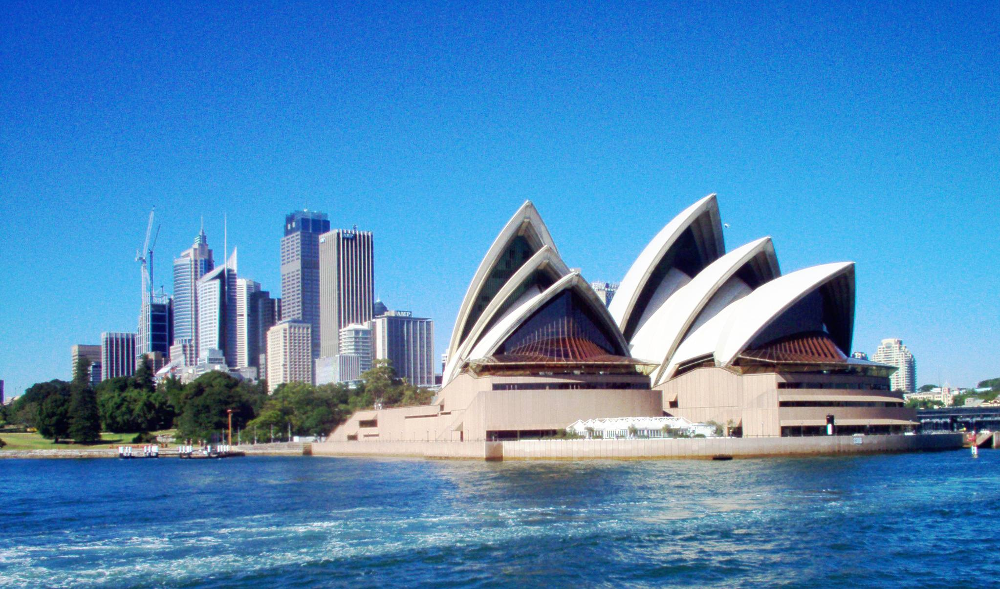

| |||||||||||
| HOME | ABOUT | CONTACT | SIGN IN | ||||||||
| | |||||||||||
| HOME | ABOUT | CONTACT | SIGN IN | ||||||||
|  |
Australia officially the Commonwealth of Australia, is a country comprising the mainland of the Australian continent, the island of Tasmania and numerous smaller islands. It is the world's sixth-largest country by total area. The neighbouring countries are Papua New Guinea, Indonesia and East Timor to the north; the Solomon Islands and Vanuatu to the north-east; and New Zealand to the south-east. Australia's capital is Canberra, and its largest urban area is Sydney. For about 50,000 years before the first British settlement in the late 18th century, Australia was inhabited by indigenous Australians, who spoke languages classifiable into roughly 250 groups. After the European discovery of the continent by Dutch explorers in 1606, Australia's eastern half was claimed by Great Britain in 1770 and initially settled through penal transportation to the colony of New South Wales from 26 January 1788. The population grew steadily in subsequent decades, and by the 1850s most of the continent had been explored and an additional five self-governing crown colonies established. On 1 January 1901, the six colonies federated, forming the Commonwealth of Australia. Australia has since maintained a stable liberal democratic political system that functions as a federal parliamentary constitutional monarchy comprising six states and several territories. The population of 24 million[5] is highly urbanised and heavily concentrated on the eastern seaboard.[19] Australia has the world's 13th-largest economy and ninth-highest per capita income (IMF). With the second-highest human development index globally, the country ranks highly in quality of life, health, education, economic freedom, and civil liberties and political rights.Australia is a member of the United Nations, G20, Commonwealth of Nations, ANZUS, Organisation for Economic Co-operation and Development (OECD), World Trade Organization, Asia-Pacific Economic Cooperation, and the Pacific Islands Forum.
Sydney Opera House is not only Australia's most famous landmark, this unique structure is one of the world's most instantly recognisable and iconic buildings. In 1956 an international competition to design an opera house for Sydney was held. Jørn Utzon had his extraordinary design declared the winner on January 29, 1957.Uluru Located in the heart of the Northern Territory and Australia, Uluru, formerly known as Ayers Rock, is the world's largest monolith. Noted for its natural and cultural value, it is certainly one of the most well known Aussie Landmarks and the greatest of all Australian landforms if you are touring and sight seeing Down Under.Heart reef Seen on TV and in movies, the Heart Shaped Reef, in Hardy Reef, has become a famous Queensland landmark and Australian icon. Hardy Reef boasts some of the best underwater viewing of the Great Barrier Reef in general, so snorkeling and scuba-diving should certainly be at the top of your list.Port Aurthur The Port Arthur Historic Site houses Australia's most intact convict settlement, including restored buildings and homes, ruins, a harbour, a coalmine, a factory and even an Isle of the Dead. With a museum, interactive experiences and a bistro serving fresh Tasmanian produce, a trip to the Port Arthur Historic site is one trip you will remember. Kakadu The World Heritage Listed Kakadu National Park is a whopping 19,804 km2 (7,646 sq mi), which is about half the size of Switzerland. The park contains a multitude of diverse and vibrant habitats, from estuaries, rivers, woodlands and wetlands to rugged gorges and rocky escarpments. It is especially famous for its flora, fauna and rock art | 
|
The most authentic of bush tucker, the grub is a nutty-flavored bite that has been enjoyed by indigenous Australians for thousands of years. The wider Australian nation has often struggled with eating it raw, but two facts remain it actually tastes good and it belongs to the land Associated with Anzac Day on April 25, the biscuit is a crunchy commemoration of the members of the Australian and New Zealand Army Corps (ANZAC) who fought in World War I. It's Australian food with a back story. The Anzac biscuit was made by wives during the war and sent to soldiers, because the basic ingredients (rolled oats, flour, sugar, desiccated coconut, golden syrup, butter, bicarbonate of soda and water) were able to keep for a long time, even on long boat journeys.Native to eastern Australia, the macadamia nut is eaten raw or included in a variety of dishes. From breads to lamb roasts and cakes, this is a versatile nut. Pick some ‘round Byron Bay during Spring.This iconic, cheap Australian food was the staple of road workers and bushies in days gone by. Originally it was the simplest of recipes. The soda bread is made from wheat flour, water and a pinch of salt, then baked in the coals of a campfire and paired nicely with billy tea or a swig of rum. Today it can be a little more fancy. milk and self-raising flour. |
 |
One iconic Australian food is Vegemite (now owned by the American Kraft Foods), a vitamin-rich, somewhat bitter, yeast spread which is often thinly spread on buttered toast. Other unique or iconic national foods include macadamia nuts; Violet Crumble, a honeycomb chocolate bar; Cherry Ripe; Jaffas, chocolate with an orange-flavoured confectionery shell, much like an M&M and the Chiko Roll, a deep-fried savoury roll similar to a spring roll. Other popular Australian foods include Tim Tams, a chocolate biscuit; musk sticks; fairy bread, buttered bread with hundreds and thousands; lamingtons; and the commercial breakfast cereal Weet-Bix.Lamb is very popular in Australia, with roasting cuts (legs and shoulders), chops, and shanks being the most common cuts. Lamb will often form part of either a Sunday roast or a barbecue. It is also commonly found as an ingredient in doner kebabs, a dish of Turkish origin that has been popular in Australia since the 1970s. According to the OECD-FAO Agricultural Outlook for 2016, Australia consumes more sheep meat than any other Western country, and the third-largest amount worldwide (after Sudan and Kazakhstan). Annually, Australians consume an average of 7.4 kilograms (16 lb) per person. By way of comparison, New Zealanders average 4.4 kilograms (9.7 lb) and Americans just 0.4 kilograms (0.88 lb). Kangaroo meat is widely available in Australia, although it is not among the most commonly eaten meats. In old fashioned colonial recipes, it was treated much like ox tail, and braised until tender forming a rich gravy. It is available today in various cuts and sausages.Also eaten (in specialist restaurants) is emu meat and crocodile meat. |
 |